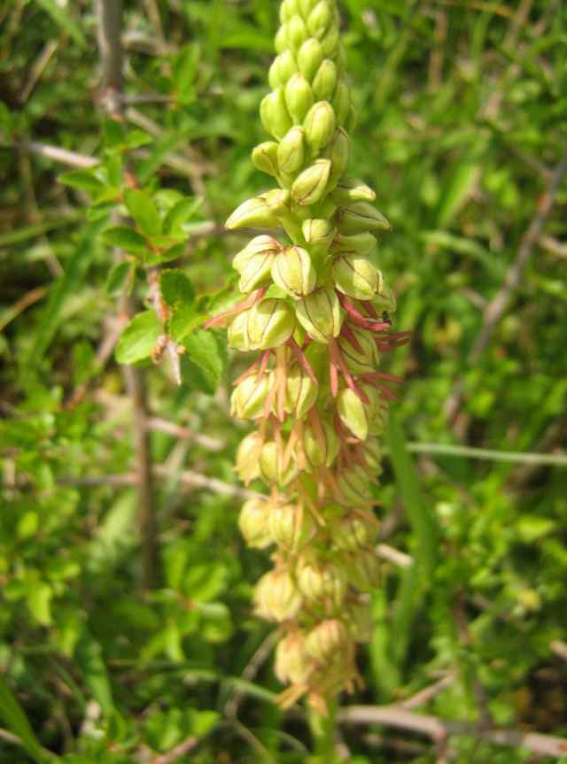
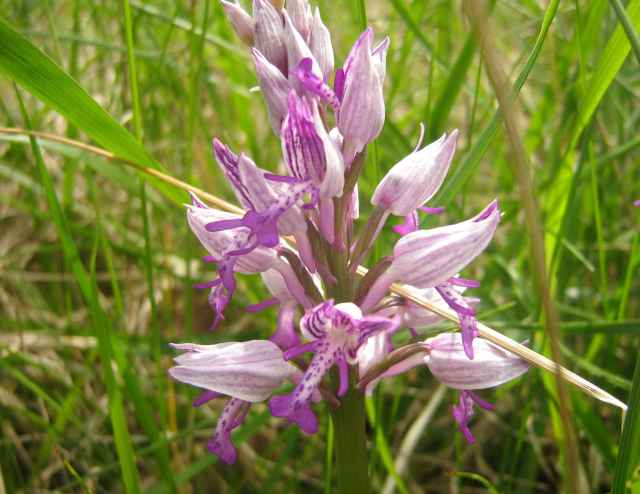
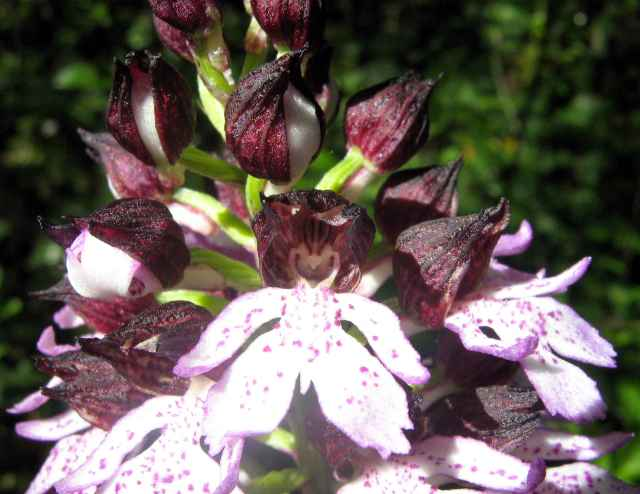

Les pages de JONATHAN
Fleurs
Tribu des Orchideae - Sous-famille des Orchidoideae
Famille des Orchidaceae
Orchis homme pendu,
ORCHIS anthropophora
(L.) All., 1785
Auxerrois, avril 2008

Orchis militaire,
ORCHIS militaris
L., 1753
Il peut s'hybrider avec l'
Orchis singe
.
Auxerrois, avril 2008

Orchis pourpre,
ORCHIS purpurea
Huds., 1762
Auxerrois, avril 2008

Mise à jour : septembre 2019
2005 à 2025
fleursauvageyonne
▲